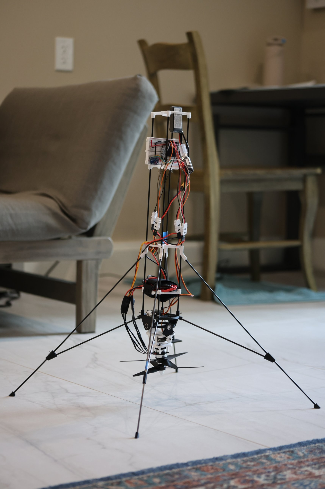

<!-- Scroll page: made with Scroll Page Editor -->
<style>
@import url('https://fonts.googleapis.com/css2?family=IBM+Plex+Mono:wght@500&family=Inter:wght@400;600;700&display=swap');
#ts-scrolly {
  --ts-text: #f2f3f5;
  --ts-muted: #b4bac4;
  --ts-accent: #ff8a3d;
  --ts-card: rgba(14, 16, 20, 0.72);
  --ts-dim: rgba(6, 7, 10, 0.6);
  position: relative;
  width: 100%;
  background: #0b0c0f;
  color: var(--ts-text);
  font-family: "Inter", system-ui, -apple-system, sans-serif;
  line-height: 1.55;
  -webkit-font-smoothing: antialiased;
}
#ts-scrolly *, #ts-scrolly *::before, #ts-scrolly *::after { box-sizing: border-box; }

/* The photo layer: pinned to the screen for the whole section */
#ts-scrolly .ts-sticky {
  position: sticky;
  top: 0;
  height: 100vh;
  height: 100svh;
  overflow: hidden;
}
#ts-scrolly .ts-bg {
  position: absolute; inset: -40px;
  background-size: cover; background-position: center;
  filter: blur(28px) brightness(.38) saturate(.9);
  transform: scale(1.05);
}
#ts-scrolly .ts-cam {
  position: absolute; left: 0; top: 0;
  transform-origin: 0 0;
  will-change: transform;
}
#ts-scrolly .ts-cam img { display: block; width: 100%; height: 100%; }
#ts-scrolly .ts-hl {
  position: absolute;
  border: calc(2px / var(--ts-p, 1)) solid var(--ts-accent);
  border-radius: calc(6px / var(--ts-p, 1));
  box-shadow: 0 0 0 9999px var(--ts-dim), 0 0 calc(20px / var(--ts-p, 1)) rgba(255,138,61,.6);
  pointer-events: none;
  opacity: 0;
}

/* The captions: scroll over the photo */
#ts-scrolly .ts-steps {
  position: relative;
  z-index: 2;
  margin-top: -100vh;
  margin-top: -100svh;
}
#ts-scrolly .ts-step {
  min-height: 140vh;
  display: flex;
  align-items: center;
  justify-content: flex-end;
  padding: 0 6vw;
  pointer-events: none;
}
#ts-scrolly .ts-step:first-child { min-height: 100vh; }
#ts-scrolly .ts-step:last-child { min-height: 110vh; }
#ts-scrolly .ts-step.ts-center { justify-content: center; text-align: center; }
#ts-scrolly .ts-card {
  pointer-events: auto;
  width: min(380px, 100%);
  padding: 22px 24px;
  background: var(--ts-card);
  -webkit-backdrop-filter: blur(14px);
  backdrop-filter: blur(14px);
  border: 1px solid rgba(255,255,255,.1);
  border-radius: 14px;
  box-shadow: 0 16px 48px rgba(0,0,0,.4);
  opacity: .25;
  transform: translateY(12px);
  transition: opacity 450ms ease, transform 450ms ease;
}
#ts-scrolly .ts-step.is-active .ts-card { opacity: 1; transform: none; }
#ts-scrolly .ts-center .ts-card { width: min(560px, 100%); background: rgba(14,16,20,.55); }
#ts-scrolly .ts-num {
  margin: 0 0 6px;
  font-family: "IBM Plex Mono", ui-monospace, monospace;
  font-size: 12px; letter-spacing: .12em; text-transform: uppercase;
  color: var(--ts-accent);
}
#ts-scrolly .ts-card h2, #ts-scrolly .ts-card h3 { margin: 0 0 8px; line-height: 1.2; color: var(--ts-text); }
#ts-scrolly .ts-card h2 { font-size: clamp(30px, 4.5vw, 46px); font-weight: 700; }
#ts-scrolly .ts-card h3 { font-size: 21px; font-weight: 600; }
#ts-scrolly .ts-card p { margin: 0; color: var(--ts-muted); font-size: 16px; }
#ts-scrolly .ts-card p + p { margin-top: 10px; }
#ts-scrolly .ts-hint { margin-top: 14px !important; font-size: 13px !important; letter-spacing: .08em; text-transform: uppercase; }

/* Progress rail */
#ts-scrolly .ts-rail {
  position: absolute; right: 18px; top: 50%;
  transform: translateY(-50%);
  display: flex; flex-direction: column; gap: 10px;
  z-index: 1;
}
#ts-scrolly .ts-rail span {
  width: 6px; height: 6px; border-radius: 50%;
  background: rgba(255,255,255,.3);
  transition: background 300ms ease, transform 300ms ease;
}
#ts-scrolly .ts-rail span.is-on { background: var(--ts-accent); transform: scale(1.5); }

/* Phones: part shown in the upper half, caption at the bottom */
@media (max-width: 760px) {
  /* Top padding pushes the caption into the lower part of the screen at each stop */
  #ts-scrolly .ts-step { justify-content: center; padding: 52vh 14px 0; }
  #ts-scrolly .ts-step.ts-center { padding-top: 0; }
  #ts-scrolly .ts-card { padding: 18px 20px; }
  #ts-scrolly .ts-card h3 { font-size: 19px; }
  #ts-scrolly .ts-card p { font-size: 15px; }
  #ts-scrolly .ts-rail { right: 8px; gap: 8px; }
}
</style>

<section id="ts-scrolly" aria-label="Annotated walkthrough">
  <div class="ts-sticky" aria-hidden="true">
    <div class="ts-bg"></div>
    <div class="ts-cam">
      
      <div class="ts-hl"></div>
    </div>
    <div class="ts-rail"></div>
  </div>

  <div class="ts-steps">
    <div class="ts-step ts-center">
      <div class="ts-card">
        <p class="ts-num">Build Diagram</p>
        <h2>Zephyr</h2>
        <p>A rocket drone hybrid</p>
        <p class="ts-hint">Scroll to explore ↓</p>
      </div>
    </div>

    <div class="ts-step" data-box="47.5 28 7 5.5">
      <div class="ts-card">
        <p class="ts-num">01 · Brain</p>
        <h3>Microcontroller</h3>
        <p>The microcontroller makes all the decisions about how to control the servos (stops 06 &amp; 07) and the throttle. It also has a built-in Wi-Fi chip, so there's little to no latency between Bajaj's computer and the drone.</p>
      </div>
    </div>

    <div class="ts-step" data-box="46 29.9 2.4 1">
      <div class="ts-card">
        <p class="ts-num">02 · Power</p>
        <h3>On/off switch</h3>
        <p>How Zephyr turns on and off.</p>
      </div>
    </div>

    <div class="ts-step" data-box="45 31.4 4.1 2.8">
      <div class="ts-card">
        <p class="ts-num">03 · Sensing</p>
        <h3>Internal Measurement Unit (IMU)</h3>
        <p>This is a tilt sensor that relays information on tilt back to the microcontroller so it can counteract severe tilt.</p>
      </div>
    </div>

    <div class="ts-step" data-box="55.3 31.6 4.6 4">
      <div class="ts-card">
        <p class="ts-num">04 · Power</p>
        <h3>Voltage Monitor</h3>
        <p>This allows Bajaj to monitor his battery such that he doesn't draw his battery down to absolute zero charge.</p>
      </div>
    </div>

    <div class="ts-step" data-box="45.5 34 13.5 15">
      <div class="ts-card">
        <p class="ts-num">05 · Signals</p>
        <h3>Servo wiring</h3>
        <p>This is the wiring that relays information from the microcontroller to the servos.</p>
      </div>
    </div>

    <div class="ts-step" data-box="43.5 55.3 13.5 6.3">
      <div class="ts-card">
        <p class="ts-num">06 · Speed control</p>
        <h3>ESC wiring bundle</h3>
        <p>Zephyr has two motors, meaning there are two electronic speed controllers (ESCs). Since there's no simple way to combine the two ESCs' outputs into one, Bajaj has resorted to using converters as shown in the image.</p>
      </div>
    </div>

    <div class="ts-step" data-box="42.5 62.4 14 5.6">
      <div class="ts-card">
        <p class="ts-num">07 · Steering</p>
        <h3>Top servo</h3>
        <p>The top servo controls pitch.</p>
      </div>
    </div>

    <div class="ts-step" data-box="44.5 67.6 10 4.8">
      <div class="ts-card">
        <p class="ts-num">08 · Steering</p>
        <h3>Bottom servo</h3>
        <p>The bottom servo controls roll.</p>
      </div>
    </div>

    <div class="ts-step" data-box="36 70.5 27 8">
      <div class="ts-card">
        <p class="ts-num">09 · Thrust</p>
        <h3>Motors and fans</h3>
        <p>These are the motors and fans whose direction is controlled by the top servo and bottom servo, to make instantaneous adjustments within the air.</p>
      </div>
    </div>

    <div class="ts-step" data-box="2 50 96 49">
      <div class="ts-card">
        <p class="ts-num">10 · Structure</p>
        <h3>Landing legs and frame</h3>
        <p>This is the frame and the base of Zephyr. It is a pyramidal structure.</p>
      </div>
    </div>

    <div class="ts-step ts-center">
      <div class="ts-card">
        <p class="ts-num">Putting it together</p>
        <h3>Zephyr</h3>
      </div>
    </div>
  </div>
</section>

<script>
(function () {
  var root = document.getElementById('ts-scrolly');
  if (!root) return;
  var sticky = root.querySelector('.ts-sticky');
  var cam = root.querySelector('.ts-cam');
  var img = cam.querySelector('img');
  var hl = root.querySelector('.ts-hl');
  var bg = root.querySelector('.ts-bg');
  var rail = root.querySelector('.ts-rail');
  var steps = Array.prototype.slice.call(root.querySelectorAll('.ts-step'));
  var dots = [];
  var IW = 1717, IH = 2576;   // fallback size until the photo loads
  var MAX_ZOOM = 2.6;         // screen px per photo px; higher gets blurry
  var shots = [], centers = [], lastActive = -1;

  bg.style.backgroundImage = 'url("' + img.getAttribute('src') + '")';
  steps.forEach(function () {
    var d = document.createElement('span'); rail.appendChild(d); dots.push(d);
  });

  function phone() { return window.innerWidth <= 760; }

  // A "shot" is where the camera looks: photo point (cx, cy) placed at screen point (fx, fy) at zoom p.
  function buildShots() {
    var vw = sticky.clientWidth, vh = sticky.clientHeight, mob = phone();
    shots = steps.map(function (s) {
      var raw = (s.getAttribute('data-box') || '').trim();
      if (!raw) {
        return { cx: .5, cy: .5, fx: vw / 2, fy: vh / 2,
                 p: Math.min(vw * .94 / IW, vh * .94 / IH), box: null };
      }
      var b = raw.split(/\s+/).map(Number);
      // Space the part may fill: left ~60% on desktop (caption on the right), top ~55% on phones.
      var aw = mob ? vw * .9 : vw * .56, ah = mob ? vh * .5 : vh * .74;
      var p = Math.min(aw / (b[2] / 100 * IW), ah / (b[3] / 100 * IH), MAX_ZOOM);
      return { cx: (b[0] + b[2] / 2) / 100, cy: (b[1] + b[3] / 2) / 100,
               fx: mob ? vw / 2 : vw * .36, fy: mob ? vh * .34 : vh / 2,
               p: p, box: b };
    });
    var top = root.getBoundingClientRect().top + window.scrollY;
    centers = steps.map(function (s) {
      var r = s.getBoundingClientRect();
      return r.top + window.scrollY - top + r.height / 2;
    });
    cam.style.width = IW + 'px';
    cam.style.height = IH + 'px';
  }

  function lerp(a, b, t) { return a + (b - a) * t; }
  function ease(t) { // hold on each stop, glide in between
    t = Math.min(1, Math.max(0, (t - .22) / .56));
    return t * t * (3 - 2 * t);
  }

  function render() {
    if (!shots.length) return;
    var vh = sticky.clientHeight;
    var y = window.scrollY - (root.getBoundingClientRect().top + window.scrollY) + vh / 2;
    var i = 0;
    while (i < centers.length - 2 && y > centers[i + 1]) i++;
    var t = centers.length > 1 ? (y - centers[i]) / (centers[i + 1] - centers[i]) : 0;
    t = Math.min(1, Math.max(0, t));
    var e = ease(t);
    var A = shots[i], B = shots[Math.min(i + 1, shots.length - 1)];

    var p = Math.exp(lerp(Math.log(A.p), Math.log(B.p), e));
    var cx = lerp(A.cx, B.cx, e), cy = lerp(A.cy, B.cy, e);
    var fx = lerp(A.fx, B.fx, e), fy = lerp(A.fy, B.fy, e);
    var x = fx - p * cx * IW, yy = fy - p * cy * IH;
    cam.style.transform = 'translate3d(' + x + 'px,' + yy + 'px,0) scale(' + p + ')';
    cam.style.setProperty('--ts-p', p);

    // Highlight: fades out between stops, moves with the camera.
    var ba = A.box, bb = B.box, oa = ba ? 1 : 0, ob = bb ? 1 : 0;
    var box = ba && bb ? ba.map(function (v, k) { return lerp(v, bb[k], e); }) : (ba || bb);
    var op = lerp(oa, ob, e) * (ba && bb ? 1 - Math.sin(Math.PI * e) * .6 : 1);
    if (box) {
      hl.style.left = box[0] + '%'; hl.style.top = box[1] + '%';
      hl.style.width = box[2] + '%'; hl.style.height = box[3] + '%';
    }
    hl.style.opacity = op;

    var active = t < .5 ? i : Math.min(i + 1, steps.length - 1);
    if (active !== lastActive) {
      steps.forEach(function (s, k) { s.classList.toggle('is-active', k === active); });
      dots.forEach(function (d, k) { d.classList.toggle('is-on', k === active); });
      lastActive = active;
    }
  }

  var ticking = false;
  function onScroll() {
    if (ticking) return;
    ticking = true;
    requestAnimationFrame(function () { ticking = false; render(); });
  }
  function refresh() { buildShots(); render(); }

  function start() {
    if (img.naturalWidth) { IW = img.naturalWidth; IH = img.naturalHeight; }
    refresh();
  }
  if (img.complete) start(); else img.addEventListener('load', start);
  window.addEventListener('scroll', onScroll, { passive: true });
  window.addEventListener('resize', refresh);
  window.addEventListener('load', refresh);
  refresh();
})();
</script>
